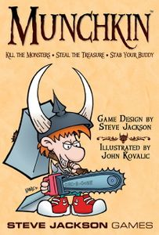
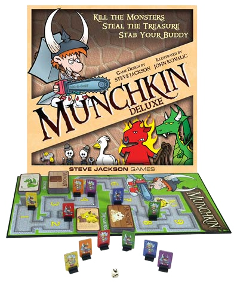

Written by Holden Vance
Publishing Info
- Published by: Steve Jackson Games
- Illustrated by: John Kovalic
- Released: Apr, 1982

Description
This award-winning card game, Munchkin, designed by Steve Jackson, captures the essence of the dungeon experience... with none of that stupid roleplaying stuff. You and your friends compete to kill monsters and grab magic items. And what magic items! Don the Horny Helmet and the Boots of Butt-Kicking. Wield the Staff of Napalm... or maybe the Chainsaw of Bloody Dismemberment. Start by slaughtering the Potted Plant and the Drooling Slime, and work your way up to the Plutonium Dragon...

Game Categories
- Genre: Action RPG
- Players: 3 - 6
- Gameplay: Card/Board
"The whacky nature and comedic elements of the game, coupled with the simplicity of its core mechanics, makes Munchkin Deluxe a very engaging experience for the player. It is easy to pick up quickly, and the relaxed explanations of the rules in the rulebook make it a lot less of a daunting task to new players. The simplistic art style is consistent and appealing to look at, giving the game a welcoming first impression to newcomers." -- https://www.board-game.co.uk/munchkin-deluxe-review/